Discover
Your Harmony
테트라필드는
당신의 일하는 시간과
여가시간, 휴식시간
그리고 당신과 함께할
사람들과의 시간까지
고민합니다
Philosophy
Written by G-planning
어떻게 하면
일과 삶의 조화를
안정적으로
이룰 수 있을까?
인생에 있어 성공보다 중요한 건 어떻게 삶의 방향을 바로잡을 것인가를 끝없이 고민하는 것 그래서 테트라필드는 공간이 추구해야할 가치와 브랜드가 지켜내야 할 요소들에 대해 고민하고, 완벽을 넘어 안정된 삶을 만들어갈 수 있도록 새로운 공간과 시간을 만들어 갑니다
제주를 담다
삶의 조화를 찾아가는
사람들의 이야기
-
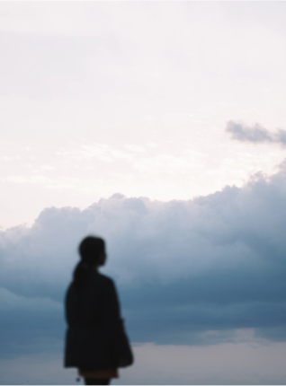
PLAY
첫번째 이야기 꼭 한 곳에서만 일할 필요는 없으니까
-
두번째 이야기 그럼에도 자연과 함께
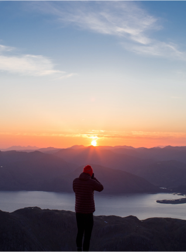 PLAY -
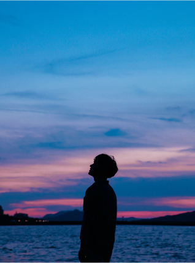
PLAY
세번째 이야기 제주가 주는 특유의 안락함과 자유로움
-
첫번째 이야기
“꼭 한 곳에서만
일할 필요는 없으니까” -
두번째 이야기
“그럼에도 자연과 함께”
-
세번째 이야기
“제주가 주는 특유에
안락함과 자유로움”
특별한 일상들

PLAY / REST / PEOPLE
WORK / REST
PLAY / REST
REST / PEOPLE
REST
REST / PEOPLE
WORK / REST
PLAY / REST / PEOPLE
PLAY / REST / PEOPLE
PLAY / REST
BEHIND
첫번째 이야기
꼭 한 곳에서만
일할 필요는
없으니까
김예샘님
디지털 문구 제작사 대표
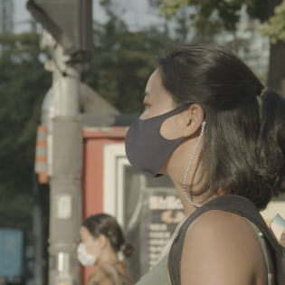
- 자신을 소개해 주세요.
- 안녕하세요! 저는 서울 신림동에 살고 있는 사업하는 디자이너 28살 김예샘입니다. 페이퍼 리스 라이프스타일 브랜드 ‘낼나’를 창업하고, 운영하고 있어요. 움직이는 거, 만드는 거, 가리지 않고 취미생활이 많은 취미덕후인데, 유튜브 채널 ‘취미생활’도 운영하고 있어요
- 업무 부분에 대해 조금 더 말씀해주세요
- 낼나(NELNA)는 내 일(Job)과 내일(Tomorrow)를 나답게 살아간다는 뜻으로, 페이퍼 리스 라이프스타일 플랫폼이에요. 쉽게 말해서, 계획을 잘 하기 위한 아이패드용 스마트 솔루션 플래너를 만들고 있어요. 저는 계획의 힘, 습관의 힘을 믿어요! 좋은 계획과 꾸준한 습관은 인생을 바꾸어 주니까요. 초등학교 때부터 매일 계획표를 쓰면서 쌓인 저 나름의 노하우와, 저의 디자인 감각을 담아, 쓰고 싶고 쓰기 쉽고 쓰게 되는 낼나플래너를 제작하고 있어요
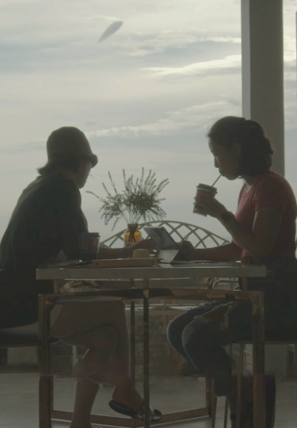

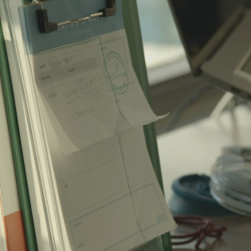
- 라이프스타일에서 중요하게 여기는 부분은 무엇인가요?
- 저는 새로운 것을 계속 찾는 편이에요. 그때그때 루틴이 달라지죠. 그리고 지금은 라이프스타일의 큰 변화를 줄 결정을 한 상태입니다. 한 달간 속초생활을 하거든요. 언젠가부터 자연에서의 라이프를 꿈꾸게 되었고, 제주도로 떠나고 싶다는 얘기를 하게 되었어요. 내일을 나답게 살기 위한 브랜드인데, 저희의 내일 보다 다른 사람들의 내일을 챙기고 있다는 생각이 들었거든요. 그렇게 제주도행을 준비하던 중 사정이 생겨 대신 속초행을 선택했죠. 속초에 있는 동안 아침에 산책이나 러닝, 상황이 괜찮다면 모닝 서핑에 도전할 예정이에요!
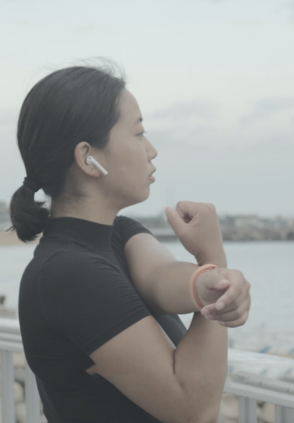
- 서울에 살면서 느끼는 힘든 점은 어떤건가요?
- 처음 얻은 낼나팀의 사무실이 강남에 있는 공유 오피스였어요. 출퇴근하기 좋고, 사람들 만나기 좋고, 모든 편의시설은 다 근처에 있다는 장점 때문에 선택했어요. 물론 너무 좋았어요. 하지만 일이 바빠 생각보다 그 장점을 누리지 못하더라고요. 사실, 평소 사용하는 편의시설은 강남역이 아니어도 어딜 가나 있어요. 오히려 강남에선 교통체증과 주차난 때문에 손님을 부르기도 미안했어요. 그리고 특히, 다닥다닥 붙어있는 사무실, 그 안에 세 명이 겨우 들어갈만한 한 칸을 빌리는 데도 비싼 임대료는, 강남 물가라는 말이 뭔지 실감했죠.
- 그런 힘든 점을 이겨내게 하는 원동력은 무엇인가요?
- 혼자 일했으면 진짜 힘들었을 것 같아요. 같이 일하는 낼나팀이 있었기에 잘 버틸 수 있었어요. 방음이 안되는 환경이라 다른 곳의 상황이 잘 들렸는데 라디오 듣는 청취자 모드로 웃어넘기곤 했죠. 출퇴근 때 붐비는 2호선을 타야 하는데, 코로나가 터지면서 많이 불안했어요. 그래서 일주일 동안 신림에서 강남까지 10km 정도의 거리를 뛰거나, 따름이를 타면서 좀 벗어나 보려고 노력했어요. 퇴근길에도 종종 3-4정거장 정도 걷기 시작했는데 그게 습관이 돼서 여전히 한두 정거장은 걷고 있어요.
- 만약 이런 일들을 제주도에서 한다면 기대되는 점이 있을까요?
- 낼나는 지금 아이패드용 서식으로 첫발을 뗐지만 앞으로 더 많은 사람들의 더 다양한 라이프스타일에 맞게 확장할 거예요. 그래서 더 많은 곳에서 여러 사람들을 만나는 것이 중요해요. 제주는 다양한 사람들이 모이는 곳이면서, 오랜 주민도 살고 있는 곳이니까 정말 다양한 사람들의 라이프를 들여다볼 수 있을 것 같아요. 그리고 제주처럼 아름다운 자연이 있는 곳이라면 디자인할 때도 큰 도움을 받을 거 같아요. 디자인이 막힐 때 나가서 스쿠터로 한 바퀴 돌아보고, 맘에 드는 곳에 멈춰서 혼자 걸어 다녀보고 생각만 해도 너무 기대돼요!
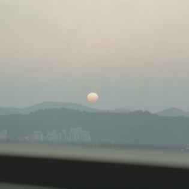
BEHIND
두번째 이야기
제주가 주는
특유의 안락함과
자유로움
이재우님
뉴미디어 콘텐츠 제작사 대표
크리에이티브 디렉터
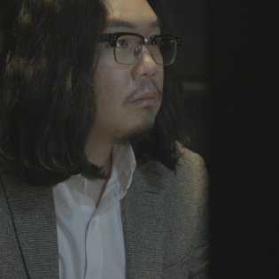
- 자신을 소개해 주세요.
- 서울에서 뉴미디어콘텐츠 제작사의 대표로 크리에이티브 디렉터 겸 소프트웨어 개발자업무를 맡고 있으면서, 제주도에서는 카페를 운영하고 있는 36세 이재우라고 합니다.
- 어떻게 하루를 보내시나요?
- 저 같은 일을 하는 사람들은 대체적으로 멋진 라이프스타일을 영위하지 못합니다. 밤 늦게까지 일하는 게 보통이다보니 자연스럽게 올빼미족으로 살고 있고, 집보다 회사에서 주로 생활하며 친구도 많지 않아 업무적인 미팅 외에는 타인을 접할 일이 많지 않습니다. 이 패턴이 언제부터 시작되었는지 어디서부터 잘못되었는지는 잘 모르겠습니다. 단지 사업을 하면서 점점 늘어나게 된 책임져야 할 것들이 저의 퇴근을 계속 미루고 있다는 생각을 가끔 합니다.
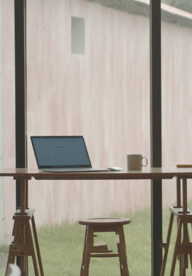
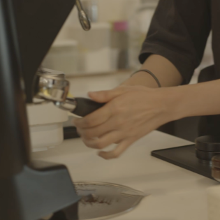
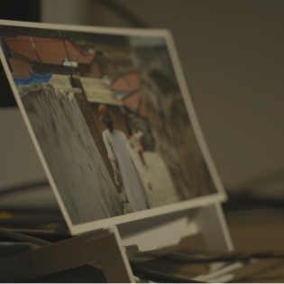
- 업무 부분에 대해 말씀해주세요. 어떤 일을 하시나요?
- 저의 Role이 여러 가지가 있는데 크게 세 가지로 나눈다면 프로젝트매니저, 제작실무자, 중소기업CEO 역할 정도 된다고 볼 수 있습니다. 낮에는 출근 후 주로 클라이언트 혹은 협력업체들과 만나 미팅을 합니다. 몇 개의 미팅을 마치고 들어오면 직원들에게 전달할 내용들과 앞으로의 작업들에 대해 정리합니다. 퇴근시간 이후에는 작업자로 돌아와 제가 맡은 작업들을 하거나 회사 자체적으로 준비해야될 콘텐츠들의 프로토타입을 만드는 등의 일을 주로 합니다. 번외로 제주도에서 운영하고 있는 카페의 일일정산을 전달받고 정리하는 것도 직원들의 퇴근시간 이후에 합니다.
- 서울에 살면서 느끼는 힘든 점은 어떤건가요?
- 제가 느끼는 지금 서울살이의 가장 힘든 일은 불투명한 미래가 지속되는 삶입니다. 기업을 운영하면서 높은 수입을 올릴 때도 있지만 그만큼 매출이 안나오거나 수금이 안되어 큰 타격을 입을 때도 많습니다. 거기에 근 몇 년간 몇 배나 올라버린 서울 집값은 저같은 무주택자들에게 엄청난 좌절감을 안겨주더군요. 미래에 대한 두려움을 항상 가지고 살다보니 꽤나 많은 스트레스를 받으며 살고 있는 자신을 발견하게 되었습니다.
- 그런 힘든 점을 이겨내게 하는 원동력은 무엇인가요?
- 현재 제주도에 카페를 운영하고 있습니다. 평소 카페 운영에 대한 로망도 있었고 커피도 좋아했는데 우연하게 기회가 닿아 당시 갖고있던 거의 모든 현금을 털어 오픈하게 되었습니다. 서울과 제주를 오가며 대부분 원격으로 운영하고 있지만 좋은 동업자를 만났고 열정적으로 시그니처 메뉴들과 카페 콘텐츠를 지속적으로 개발 해왔습니다. 업무적으로 지치거나 할 때 하루 이틀 정도 시간을 내서 다녀오곤 하는데 여기서 얻는 위안이 상당히 큽니다. 지속적으로 발생하는 수익에서 오는 안정감도 있지만 내가 언제든지 맘편히 가서 쉴 수 있는 공간이 제주도에 존재한다는 사실이 가장 좋다고 느낍니다.
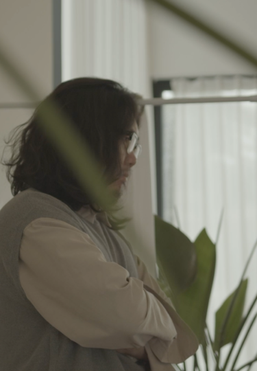
- 만약 당신이 하는 일을 서울이 아닌 제주도에서 한다면 기대되는 점이 있을까요?
- 지금 서울에서 하는 일들은 다른 곳이면 몰라도 제주도라면 얼마든지 지속할 수 있다고 생각합니다. 업무차 서울에 올라가야 할 일들이 빈번하겠지만 항공 인프라가 잘 되어있어 크게 신경쓰이는 일은 아니고, 무엇보다 제주도 내에서도 제가 주로 제작하는 뉴미디어콘텐츠의 수요가 상당하다고 생각합니다. 제주도에는 이미 많은 박물관, 전시관, 테마파크들이 존재하고 온갖 콘셉트의 카페들이 가득한데 협업할 사람들만 잘 만난다면 작업 수요는 서울보다 오히려 많지 않을까 합니다.
- 앞으로의 꿈꾸는 당신의 미래는 무엇인가요?
- 현재 하고있는 사업을 잘 유지하고 직원들과 함께 성장하고 부유해지고 싶습니다. 카페도 프랜차이즈화 시켜 더욱 유명하게 만들고 싶구요. 더불어 아내와 딸에게 부끄럽지 않은 삶을 이어가고 싶네요. 좋은 곳에 정착하여 안정적인 생활을 하는 것, 어떻게 보면 현재 모든 30대의 현실적인 꿈이자 목표 아닐까 합니다.
BEHIND
세번째 이야기
그럼에도
제주와 함께
고재훈님
프리랜서 개발자 겸 강사
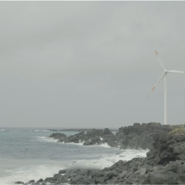
- 자신을 소개해 주세요.
- 2014년부터 제주도에 거주하고 있는, 프리랜서 프론트앤드 개발자 겸 강사, 41세 고재훈이라고 합니다.
- 제주 이주를 생각하게 된 계기가 있나요?
- 2012년 9월에 제주도로 오토바이 여행을 왔었습니다. 직접 타는 오토바이를 인천에서 배에 싣고 제주에 와서 아내와 함께 9박 10일동안 제주도를 한바퀴 도는 여행을 했었는데 ,2일차에 월정리에서, 비가 오토바이의 배터리까지 들어가서 시동이 안걸리는 일이 발생한 것입니다. 이 일로 인해서 예정에 없던 숙소를 잡아야만 했는데, 그 숙소는 작은 골목을 따라 들어가면 잔디밭이 깔려 있는 작은 게스트하우스였습니다. 도착했을 때는 맑은 날씨였는데, 잔디밭 가운데서 2세, 5세 남자 아이 둘이 홀딱 벗고 물을 뿌리며 뛰어놀고 있었습니다. 그 풍경이 아내에게는 아주 크게 다가 왔던 것 같습니다. 아내는 서울에 돌아가서도 하도리에 살고 싶다는 말을 했었고 말 뿐만이 아니라 진지하게 이야기를 했었기에 2년 동안 제주에 직장을 구해서 내려오게 되었습니다.
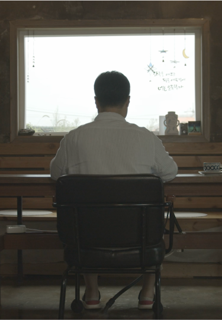
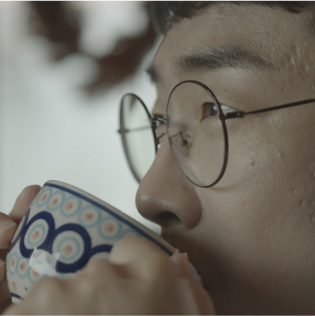
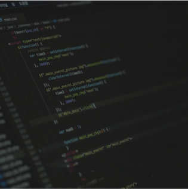
- 제주에서의 일은 어떤식으로 하시나요?
- 주로 학교나 기관 수업을 하기 때문에 정해진 일정들이 있습니다. 현재는 시내에 있는 고등학교에 월,화,금 주 3회 출강을 나가고 중간중간 다른 기관들의 수업과 개인 과외 수업이 진행됩니다. 개발 관련되서는 제주의 한 회사에서 원격으로 웹사이트를 개발하는 일도 함께 하고 있습니다. 시내로 나가야 되는 경우에는 중간에 비는 시간에 카페에서 개발 일을 한다거나 혹은 수업 교안을 만드는 일을 합니다. 시내 일정이 없는 경우에는 주로 공방에서 일을 합니다.
- 실제 제주에서의 생활을 서울 생활과 비교하자면?
- 저희 부부는 경제적 여유가 있는 상태에서 제주에 내려온게 아니었어요. 그러다보니 사실 경제적인 면에서는 서울보다 나은 것은 아닙니다. 그럼에도 불구하고 제주에 사는 첫번째 장점은 자연이 가깝다는 것입니다. 서울에서는 시선에 걸리는 것들은 건물, 차 이런 것들인데요 제주에서는 시선에 걸리는 것들이 하늘, 바다, 산이라는게 제일 큰 장점 인것 같습니다. 5분 거리에 바다가 있고 20분 거리에 오름이 있고 40분 거리에 산이 있습니다. 하루에 바다, 오름, 산을 다 둘러볼 수도 있다는 것이죠. 가끔 너무 지치거나 힘들때 일 다 미뤄두고 반나절만 쉬러 나가도 산과 바다는 모두 즐길 수 있습니다.
- 처음 왔을때 느낀 어려웠던 점은 무엇이 있을까요?
- 저희는 옛날 가옥을 리모델링 했는데요 이 리모델링 과정이 너무 힘들었습니다. 하자가 너무너무 많았는데 고쳐주질 않아서 제가 직접 고쳤어야 했습니다. 비가 새는 지붕 고치러 직접 올라가는 일까지도 했었습니다.
- 만약 당신이 하는 일을 서울이 아닌 제주도에서 한다면 기대되는 점이 있을까요?
- 지금 서울에서 하는 일들은 다른 곳이면 몰라도 제주도라면 얼마든지 지속할 수 있다고 생각합니다. 업무차 서울에 올라가야 할 일들이 빈번하겠지만 항공 인프라가 잘 되어있어 크게 신경쓰이는 일은 아니고, 무엇보다 제주도 내에서도 제가 주로 제작하는 뉴미디어콘텐츠의 수요가 상당하다고 생각합니다. 제주도에는 이미 많은 박물관, 전시관, 테마파크들이 존재하고 온갖 콘셉트의 카페들이 가득한데 협업할 사람들만 잘 만난다면 작업 수요는 서울보다 오히려 많지 않을까 합니다.
- 앞으로의 꿈꾸는 당신의 미래는 무엇인가요?
- 제주의 친구들과 함께 마을을 만들어보자고 함께 땅을 샀습니다. 아무것도 안되어 있는 곳이라서 전기도 끌어오고 상하수도 공사해야 하는 곳입니다. 지금은 상황이 여의치 않아서 당장은 아무것도 못하고 있지만 이 곳에 좋아하는 사람들과 함께 마을을 만드는 것이 지금 저희 부부가 꿈꾸는 미래입니다.
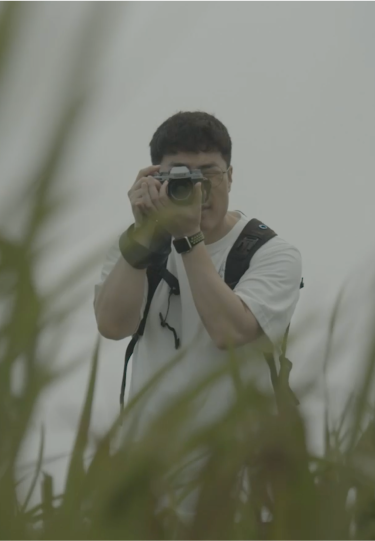